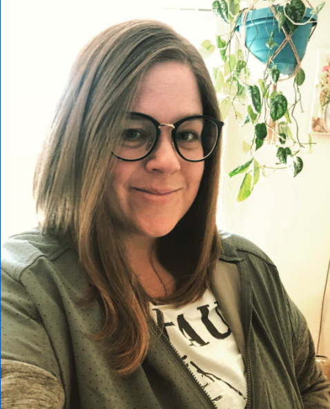

About Me

I am originally from Southern California, but I also spent 10 years in Phoenix, AZ before eventually moving to Washington in 2015. I live with my partner, Victor, and our dog, Garth. Most of my free time is spent hanging out with the two of them! I love being outdoors; a day at the beach, hiking or a nice park. I also love to explore and travel, which is helpful because most of my friends and family live far away.
Both my partner and I have family in Socal that we visit often, especially during the winter. I also have connections in Arizona, Connecticut and New York that make for fun places to visit. My partner also has family in Mexico, although we have yet to visit them together.
My career path has mainly been in retail and customer service, and began to really evolve in 2015 when I received a big promotion from my previous employer, Columbia Sportswear. At Columbia I quickly rose through the ranks and became revered by most of my colleagues. Unfortunately, as my position changed, so did the landscape I was working in and I began to dislike my job.
Realizing it was time for a change, I have now started the journey to become a web developer. With hard work and dedication, hopefully I'll be able to have the same success in my new career path!